I wanted to convey to the user, how the drivers over the entire history of formula 1 performed compered
against each other and how all the different nationalities in formula 1 compare against each other on a
graph, with the end goal of my project being to find out who the best driver in the history of the sport
is.
I would like for the user to be able to input 10 or more drivers and see how their overall driver stats
such as race wins, race starts, pole-positions, and world championships compete against each other on a
graph so the user can clearly see the drivers' statistics.
Ideas:
Examples Of Information Systems:
The Covid 19 Ireland Website
This website contains information on the Covid 19 epidemic up to November 2023.
I really like how this website displays the information to the user in the form of an easily adjustable
graph that allows the user to select the year and the statistics from that year are shown. Along with
that I also love the slider included above the graph that lets you select exactly what period you want
to inspect.
(Ireland's Covid19 Data Hub)
The HSE Website
I found from this website upon the initial menu where you type in your desired date that you wish to get
information on , the next menu that shows up is in my opinion rather inconvenient as it does not display
the information clearly to the user with the addition of random highlighted colour that make the screen
feel very cluttered and makes the information difficult to take in.
(Urgent and emergency care report (TrolleyGAR))
Formula1.com
I took major inspiration from this website as it is extremely easy for the user to navigate. When you
hover over results a drop-down menu comes up with
“Archive 1950-2023", I found this archive had its information neatly organized and allowed the user to
access drop down menus for each section, for example you can select the year or even a specifics teams
statistic from that year on a particular racetrack. If there was more time for me to produce my project,
I would like to implement something like this in my project.
(F1 - the official home of Formula 1® racing)
Plan & Design
I selected the Idea of the Formula One Project, reason being it is the option I am most interested in,
and I watch Formula One on a regular basis along with my father and I have immense interest in the
topic.
My website is intended for people of ages between 12-100 who are fans of Formula One
I will approach this using the Agile Programming Method because I will be doing my work incrementally
and I find the iterative design suits me best.
In planning my website, I have taken in to account social and ethical considerations and have decided
that No names or personal information will be displayed from my user survey, only overall statistics. I
also plan to ensure it incorporates features of universal design with a clean layout and a simple
structure which will make it easy to navigate
My information system will meet all the basic and advanced requirements of the brief:
It will be able to clean data and store it in a database. Analyse the cleaned data and create basic
graphs of the resulting analysis.
In addition, it will have three interactive graphs Nationality Wins, Driver Career Wins, and Driver Win
Rate, helping users to visualize the performance of various nationalities/drivers over the years, and
driver win rates. Users will be able to Update graphs based on filters: Select nationalities, select
drivers and adjust the win rate percentage with the provided sliders.
There will be a survey page which will take at least three different datatypes as input. This data will
be stored in a database and a summary of all user input will be returned to the user.
Main-Web-1
Main-Web-2
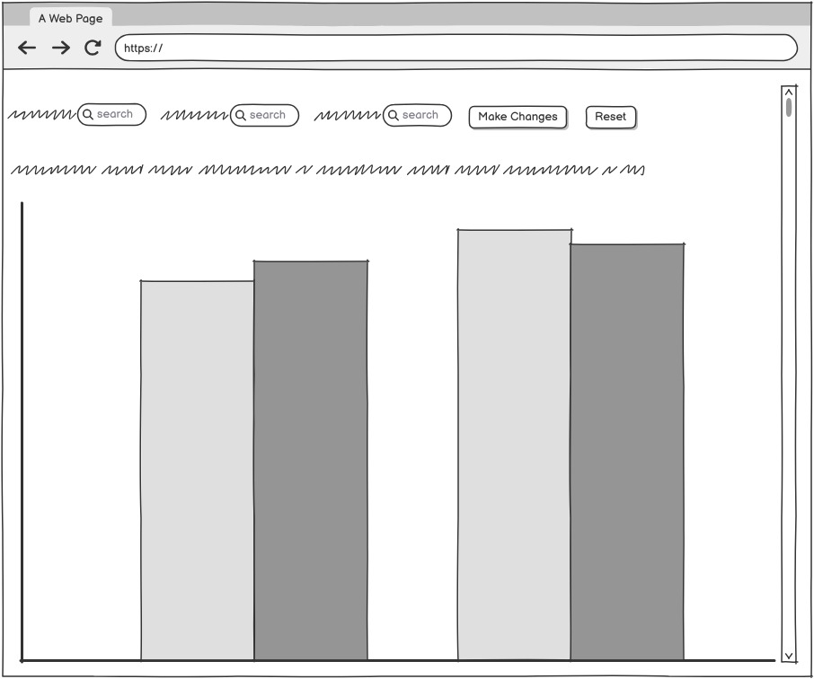
Main-Web-3
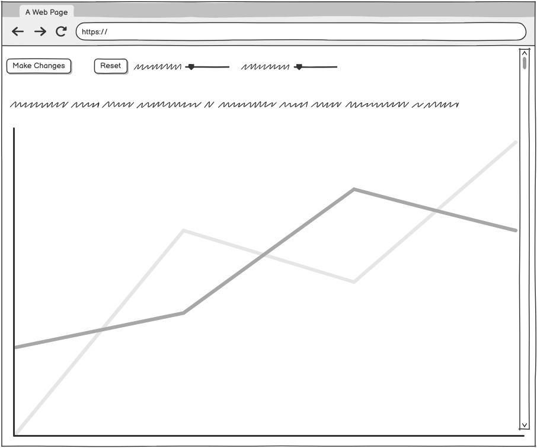
Suggestions/Recommendations
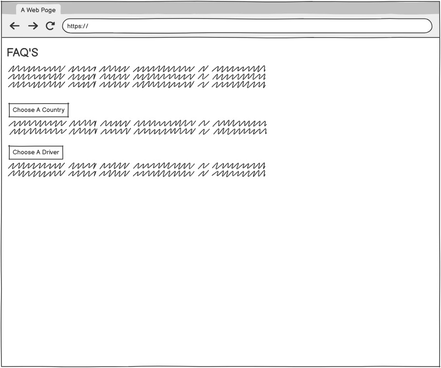
User-Form
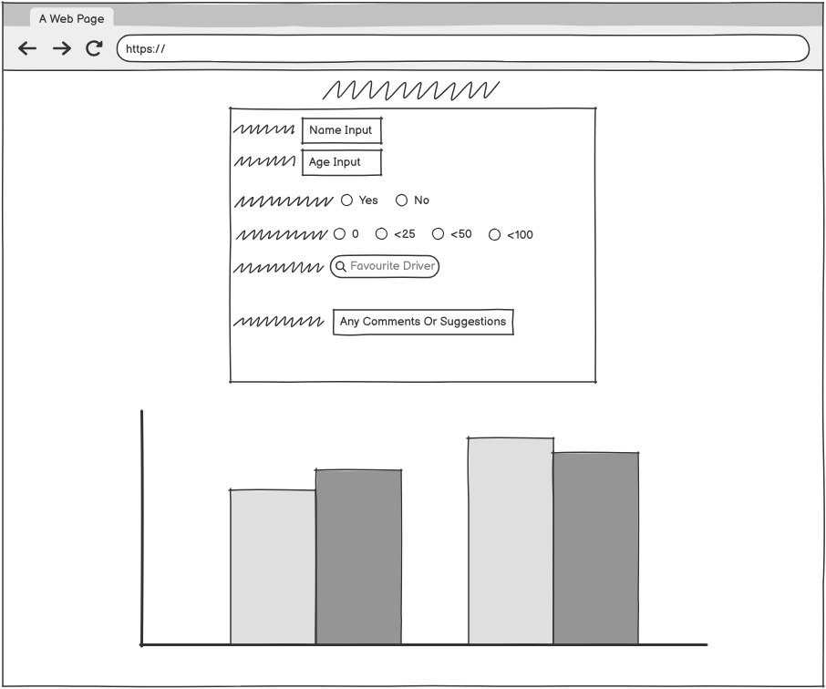
Finally, at the end of the main page there will be a section which will provide the users with
information particular aspects of F1 drivers and countries.
The technologies I intend to use are:
Python, Pandas, Matplotlib for Cleaning, data analytics, visualization of graphs and sending variables
to database.
JavaScript, ChartJS for Visualizing the graphs, process user input and send it to database.
CSS and HTML for the creation of the information system
Firebase to store cleaned data, analyzed data and user input and fetch data for graphs and user
responses.
miro.com to help create my flowcharts
balsamiq.cloud for creating my wireframes of my information system.
Visual Studio Code and Thonny for my IDES. Also, VS Live Server to run my information system.
OBS Studio and Kdenlive for creating the video of my project and editing of video for project.
SYSTEM ARCHITECTURE DIAGRAM
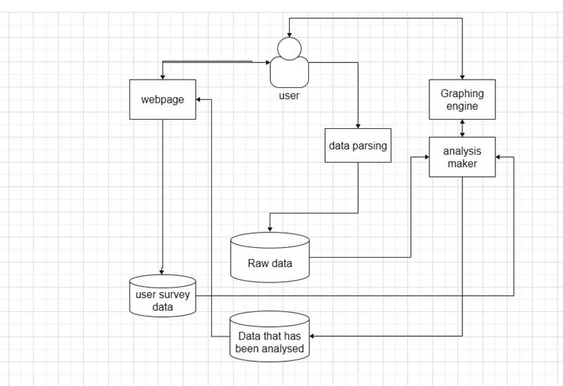
Flowchart
Create
Progress Log:
Week 1 - 2
began work on my investigation for my project
came up with potential ideas for my project and what graphs I would display to the user and how they
would be interactive
I found many datasets on https://www.kaggle.com/ that could potentially be used for my project
II chose a final project idea, the Formula One Project using the F1 driver dataset I found on Kaggle.
Week 3
Started to work on python code to clean my dataset removing any unnecessary information and sent my data
to firebase
Week 4
began work on my Analysis python program with plans to do any necessary calculations that I need for the
graphs that I wish to display to the user.
Week 5
Continued with necessary calculations for my graphs and stored the information in a dictionary.
Week 6
Created my graphs in python to ensure everything was working accordingly, I did this by using Matplotlib
Week 7
Began work on my website by creating a html page and drawing the desired graph using ChartJS and update
it according to the user's input.
Week 8
Continued adding interactivity to the graphs and added a reset button to each graph that resets them to
their original state.
Week 9
Continued with my graphs and worked on my recommendations I had to go back to my analysis and add code
to do calculations I had left out for my recommendations.
week 10
I began work on my Survey in a separate HTML file that asks the user for various forms of inputs such as
Integers, String and Boolean.
I added a menu to my main website that links my Survey page with my Main Website.
Week 11
Finished up my code and tidied it up. Started work on writing up my report in HTML.
Week 12
In the final week I began work on my video and edited it to present it in a clean and easy to understand
manner and read over my write up to make sure it all makes sense and that all requirements in the brief
are met.
Testing:
During my development process I carried out various methods of testing such as printing statements in my
code to see if the variables updated correctly or to see if calculations were working correctly.
When sending data to firebase, I was continuously checking firebase to make sure everything was getting
sent correctly and adjusted if it was not working as intended
I also included alerts in my java script code to make sure everything was working correctly there along
with console. I carried out white box testing and got people in my class to try and break my website so
they carried out black box testing. I also carried out regression testing on my code to make sure I
didn’t break it when I made adjustments to it.
Below is a test table of some of my testing.
Main-Web-1
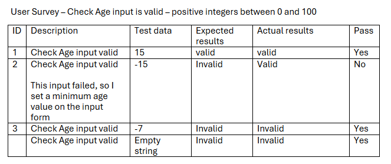
Main-Web-2
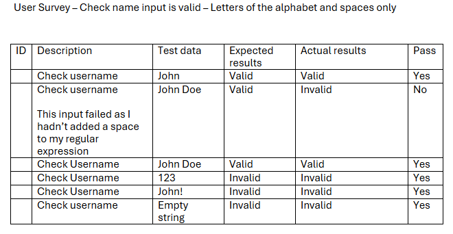
Main-Web-3
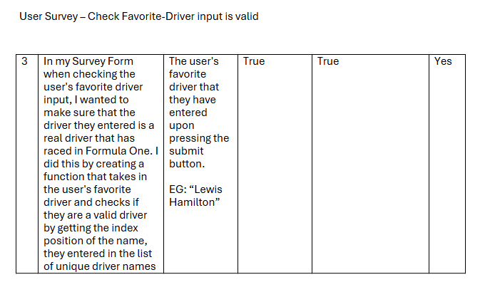
A problem encountered
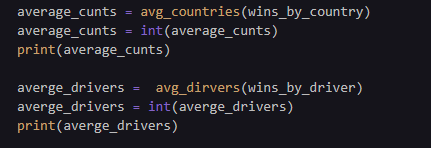
When I first tried calling the functions when providing the correct variable inside of the function to get the average number of wins for a driver / nationality, I realized the code was not working as intended when the print statement that followed did not give me what I wanted.
This was not working because it was giving me an error as the function cannot do calculations on string values.
I then made the following changes:
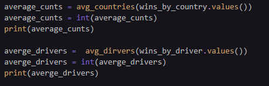
I added “. values” in order to sub in the amount of wins each driver had as the data for drivers wins / nationality wins was arranged in key value pairs, meaning that the name of the driver was the key and the value being the amount of career wins the driver had.
This thankfully fixed my problem and gave me the correct number for average wins for a driver / nationality.
Algorithm and Analysis
Initialize firebase and load credentials from CSV file.
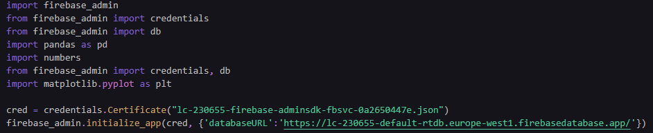
Get the driver names from the database and get nationality and wins of each driver.
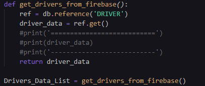
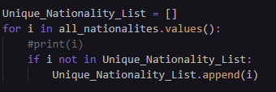
Create a list of unique-nationalities and calculate the total wins per nationality by summing wins by all drivers from the same country.
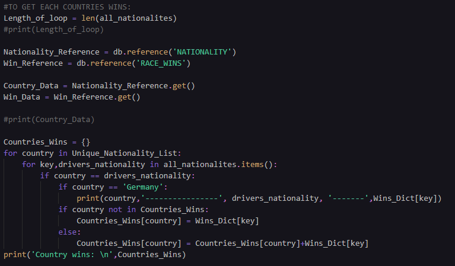
Create a dictionary that stores wins for each driver and remove duplicate entries if they exist and store drivers with at least 1 win.
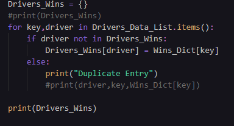
Calculate win rate for drivers by fetching the number of races each driver has started and calculate win rate using formula storing the win rate data.
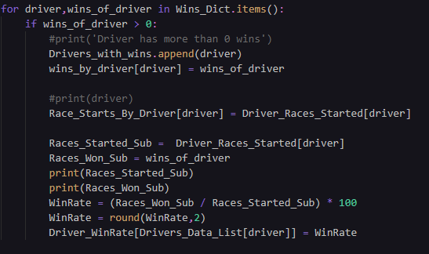
Calculate averages by computing the average numbers of wins for country and driver.
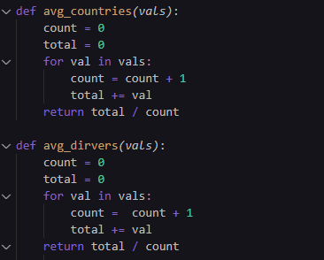
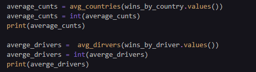
Store this processed data in firebase.
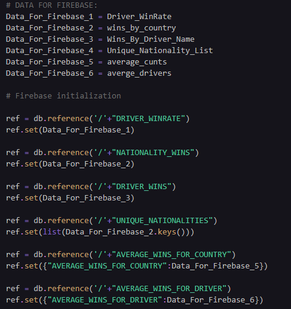
Evaluation
I believe my final finished project satisfies all basic and advanced requirements set out by the brief.
My project consists of a PUBLICLY AVAILABLE dataset of Formula One driver statistics which I cleaned and
sent the cleaned data to be stored in Firebase
I used python to carry out analytics on the clean data using data structures such as lists and
dictionaries and various functions. I drew the BASIC graphs using mathplotlib 2 separate graphs
representing different aspects of the data . One is a bar chart and the other is a line graph .
All axis and titles are then clearly labelled accordingly.
I developed a website where I displayed the basic graphs from my python analysis made fully labeled and
interactive using Chart.JS and included Information about what my information system is and what each
graph displays above each graph .
I created a survey form which the user can submit in relation to my dataset on my information system.
This takes in at least three different datatypes and the inputs of the user have been validated .Once
the user presses the submit button it stores and sends that information to firebase. I have used
JavaScript in this component as requested and summarized the results of all survey users underneath the
survey form.
Lastly I included a separate area in my information system that helps inform the user about other
aspects of formula 1 in an interactive manner.
If I had more time I would carry out more analysis and add more information to the main page with
increased interactivity. I would all provide a more detailed summary from the user survey. I would
improve the styling and also add a log in feature for users to access a forum which I feel would add to
the user experience.